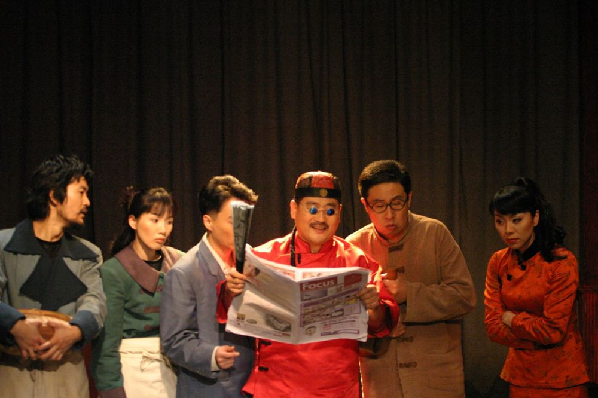

Green Pig > Archive > Assassins

December 1931, a restaurant in the French Concession of Shanghai. Kim Ku and Lee Bong-chang are plotting to kill the Japanese emperor. Just as Bong-chang, with a great purpose in mind, is about to leave, unexpected circumstances keep postponing the attempt, and each time news arrives that the attempts of comrades sent earlier have failed. Why do the bombs always fail to explode? An action drama that leaps across the times and places of Kim Ku, Lee Bong-chang, Yun Bong-gil and those who tell their stories. Green Pig's first work.
2006.10.26–11.26 / Uri Theater, Daehangno
Playwright & Director: Park Sanghyeon
Cast: Lee Daeyeon
Next: I Am Happy
Back to the archive | Any work
Published 2026.11.13